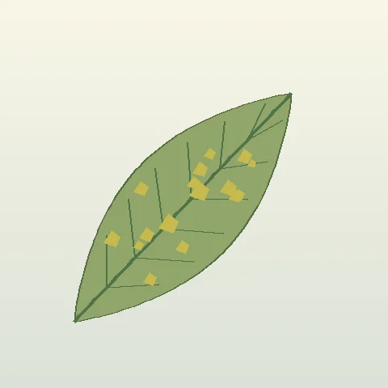

Angular leaf spot
Angular yellow patches bounded by veins
This is one possible explanation. Compare the signs below with those on your plant.

What to look for
Inspect the underside for fuzzy growth and see whether veins bound the discolored areas.
Possible causes and next steps
Some foliar diseases produce angular spots. Keep foliage dry and document both sides and the host.